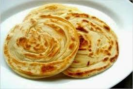
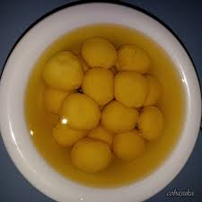
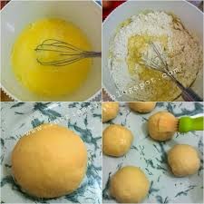
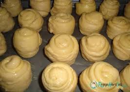

Resep Kue Maryam
Bahan-bahan:

- 250 gr Tepung Terigu
- 1 butir telur
- 3 sdm margarin,lelehkan
- 2 sdm susu bubuk(optional)
- 1/2 sdt garam
- Margarin leleh untuk olesan
- Minyak untuk merendam
- Campur semua bahan roti jadi satu

- Uleni sampai kalis jangan takut jika adonan lengket ya, lumuri tangan dengan tepung sesekali, uleni terus sampai adnonan kalis

- Kalisnya adonan roti canai tidak sekalis adonan roti ya, kira2 seperti ini sudah cukup
